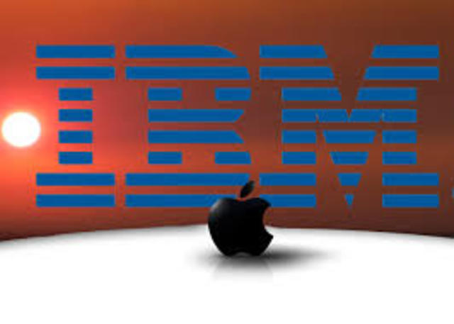

|
las computadoras de esta generacion cuentan con arquitecturas combinadas paralelo vectorial, con cientos de microprocesadores vectoriales trabajando al mismo tiempo. Las redes de area mundial seguiran creciendo desorbitadamente utilizando medios de comunicacion a travez de fibras opticas y satelites, con anchos de bandas impresionantes. Algunas de ellas son: inteligencias/ artificial, distribuida; teoria de caos, sistemas difusos, holografia,transistores opticos, etc.
Compatible con DOS, la primera versión del Windows ofrecía satisfacción y performance a los usuarios de PC.
La World Wide Web nació cuando Tim Berners-Lee, un investigador del CERN, desarrolló el HTML (HiperText Markup Language). Investigaciones de Cray revelan el Cray Y-MP C90 con 16 procesadores y una velocidad de 16 Gflops. el primer PDA (personal digital assistant).
El Pentium de Intel es presentado en marzo.
La Universidad de Illinois desarrolla una interfaz gráfica para navegación por Internet llamada NCSA Mosaic. Windows 95 es lanzado el 24 de agosto con una gran campaña de marketing. El lenguaje de programación Java , lanzado en mayo, permite el desarrollo de aplicaciones independientes de plataformas. "Duke" es el primer applet. más rapido que el antiguo.
Microsoft lanza el Windows 98.

|